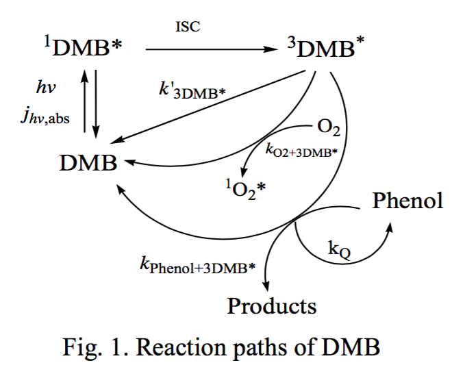
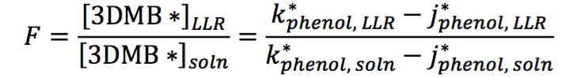
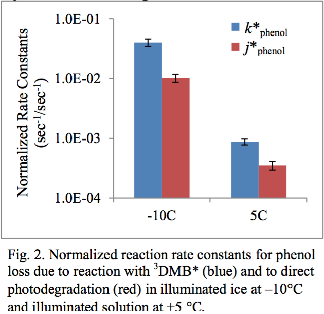

Enhancement of Triplet Excited States of Organic Compounds in Ice
Introduction and Problem Statement: Photochemical oxidants likely play an important role in the processing of organic compounds in snow and ice and the release of organic gases such as formaldehyde into the overlying atmosphere1,4. While oxidants such as hydroxyl radical have received significant attention in snow and ice, little is known of triplet excited states of organic compounds (3C*) in snow and ice, even though they can be important oxidants in atmospheric aqueous phases (e.g., fog droplets) and in surface waters5. As illustrated in Figure 1 for 3,4- dimethoxybenzaldehyde (DMB), which is emitted from biomass combustion, light absorption by DMB excites the molecule to its triplet state (3DMB*), which can either return to the ground state, react with oxygen to form singlet molecular oxygen (1O2*), or oxidize organics, such as phenol (Fig. 1). Recent research shows that 1O2* concentrations in illuminated ice are many orders of magnitude higher than levels in the same sample studied as solution3. This suggests that concentrations of excited triplet states are similarly enhanced, in which case this group of oxidants could be an important sink for organic compounds in/on illuminated ice.
Objectives: The first goal of this proposed research is to determine whether 3C* concentrations are enhanced in/on ice compared to in the same sample studied as a solution. The second goal is to examine how this concentration enhancement depends on temperature and total solute concentration and test whether the enhancement follows the predictions of freezing point depression. These goals will be achieved by measuring the photochemical loss of phenol in illuminated ice and solution using DMB as the triplet precursor.
Hypothesis: My hypothesis is that 3DMB* concentrations will be enhanced in ice samples and that the enhancement will follow predictions from freezing point depression. If this holds true, then the expected 3DMB* concentration enhancement will be about 6000, which would make triplet states an important sink for organic species in illuminated snow and ice.
Research Plan: I will use phenol (C6H6OH) as a model organic compound to probe the concentrations of 3DMB* in laboratory solution and ice samples as a function of pH, temperature, total solute, and oxygen concentration.
Sample Preparation: Samples will be made with nanomolar concentrations of phenol as the triplet probe and DMB as the triplet precursor; both of these organics are emitted from biomass burning5. I will control the total solute concentration and pH with NaCl and HCl, respectively. Samples will be placed into high performance liquid chromatography (HPLC) vials and frozen at -10°C using a temperature-controlled freeze chamber.
Experiment: Samples will be irradiated with a portion of solar radiation - 313 nm light - in a temperature-controlled illumination chamber; corresponding dark controls will be treated identically except for illumination. I will use the photochemical actinometer 2-nitrobenzaldehyde to measure the photon flux in each experiment. The concentration of phenol in each sample is monitored throughout illumination by HPLC to measure the kinetics of phenol loss.
Analysis: Analogous to the approach used for singlet molecular oxygen2, I will determine the freeze concentration factor (F) in each illuminated ice sample to examine the enhancement of 3DMB* concentration in/on ice vs. in solution. F is the ratio between the concentration of 3DMB* in liquid-like regions (LLR) of ice and in solution:
I calculate F by examining the ratio of the ice and solution photon-flux-normalized pseudo-first- order reaction rate constants of phenol loss due to 3DMB* (k*phenol) after correction by the photon-flux-normalized direct photodegradation rate constants for phenol loss (j*phenol). Preliminary and Anticipated Results: My preliminary results show a significant enhancement of 3DMB* concentrations on ice compared to in solution, with a freeze-concentration factor (F) of almost 600 (Fig. 2). While this is a very large enhancement in 3DMB*, it is 10 times less than the value of F predicted by freezing point depression. I will investigate further this discrepancy of F values by varying parameters such as temperature, pH, TS, and initial concentration of organics to determine the conditions needed for the experimental F values to match predicted values from freezing point depression.
Literature Cited:
- Ariya, P.A., et al., Snow - a photobiochemical exchange platform for volatile and semi-volatile organic compounds with the atmosphere, Environ. Chem., 8, 62-73, 2011.
- Bower, J., et al., Using Singlet Molecular Oxygen to Probe the Solute and Temperature Dependence of Liquid-Like Regions in/on Ice, J. Phys. Chem., 117, 6612-6621, 2013.
- Bower, J., et al., Measuring a 10,000-fold Enhancement of Singlet Molecular Oxygen Concentration on Illuminated Ice Relative to the Corresponding Liquid Solution, Atmos. Environ., 75, 188-195, 2013.
- Grannas, A. M., et al., An overview of snow photochemistry: evidence, mechanisms and impacts, Atmos. Chem. Phys. 7, 4329-4373, 2007.
- Smith, J.D., et al., Secondary organic aerosol production from aqueous reactions of atmospheric phenols with an organic triplet excited state, Environ. Sci. Technol., 48, 1049-1057, 2014.